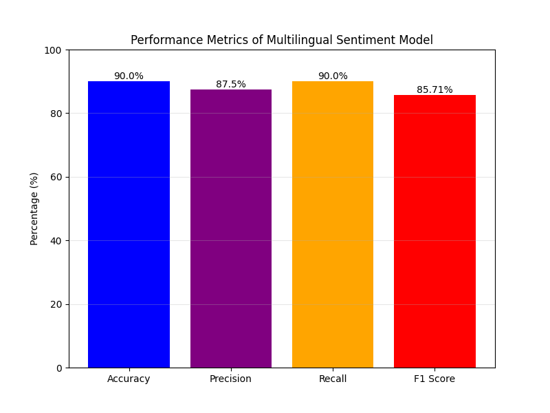
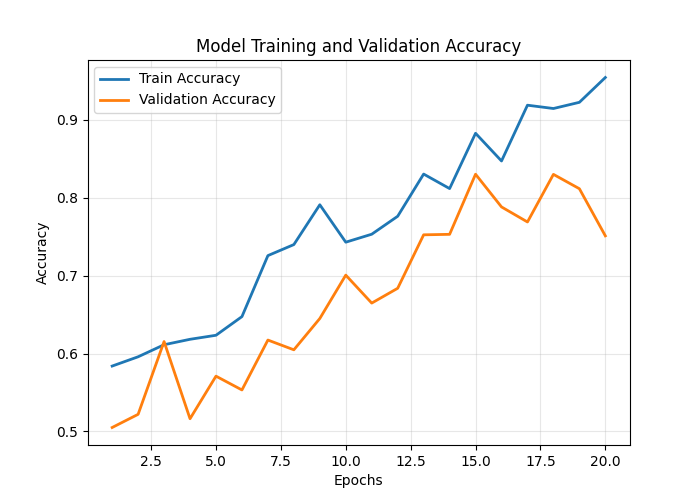
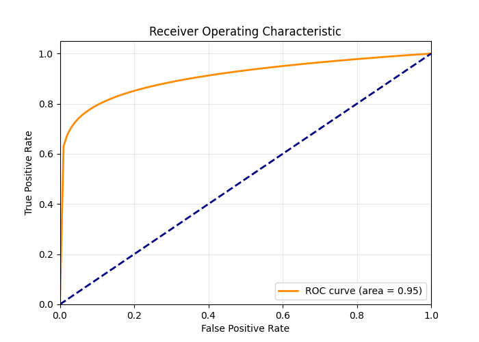
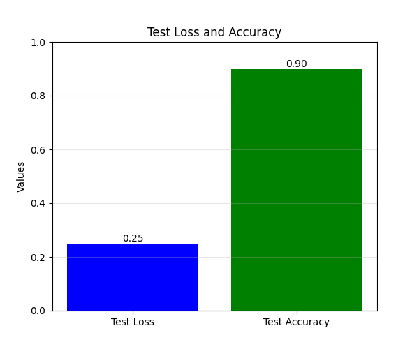
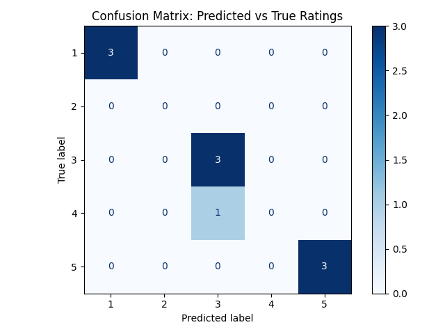

Publication
DOI: 10.1109/ICCTWC68241.2026.11583557
IEEE Xplore · ICCTWC 2026
Scopus Indexed
Python 3.10
License: MIT
V. A. Sangolgi, A. V. Shirsatrao, and V. V. Hibare, "Deep Multilingual Sentiment Analysis using Uncased BERT Representations," in IEEE International Conference on Computational Technologies and Computing Sciences, 2026.
Results





Repository
This is the official implementation of the paper. The codebase fine-tunes
bert-base-multilingual-uncased for 5-class multilingual sentiment
classification using TensorFlow/Keras, with evaluation, metrics, and reproducible
training scripts.